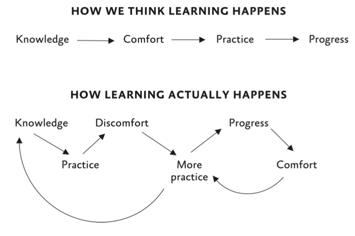

READING NOTES
Hidden Potential
Creatures of Discomfort
วิธีที่จะช่วยให้เราเรียนรู้ได้เร็วที่สุดไม่ใช่การรอจนกว่าตัวเองจะพร้อม
หรือการเลือกทำเฉพาะเรื่องที่เราถนัด
แต่คือการเรียนรู้ที่จะ
"อยู่ร่วมและเป็นมิตรกับความรู้สึกอึดอัด" (discomfort —
ความรู้สึกไม่สบายใจหรือความยากลำบากเมื่อต้องทำสิ่งใหม่ๆ
ที่ไม่คุ้นเคย)
โดยเราจำเป็นต้องฝึกฝนความกล้า 3 รูปแบบด้วยกัน
ได้แก่:
- กล้าที่จะปล่อยมือจากวิธีเดิมๆ ที่เราคุ้นชิน เพื่อเปิดโอกาสให้ตัวเองได้ลองหาวิธีใหม่ที่ดีกว่า
- กล้าที่จะเริ่มต้นลงมือทำทั้งที่ยังไม่พร้อม เพราะการรอให้พร้อมมักจะทำให้ไม่ได้เริ่มเสียที
- กล้าที่จะยอมรับและทำผิดพลาดให้มากขึ้น เพราะความผิดพลาดเป็นสะพานเชื่อมไปสู่การเรียนรู้ที่แท้จริง

Human Sponges
การทำตัวให้เหมือนฟองน้ำ (Being a sponge — การมีนิสัยรักการเรียนรู้และเปิดรับสิ่งใหม่ๆ เสมือนฟองน้ำที่คอยซึมซับน้ำ) เปรียบเทียบได้กับฟองน้ำทะเลที่มีความสามารถหลัก 3 ประการ คือ:
- ดูดซับ
- กรองออก
- ประยุกต์
ซึ่งเป็นการเลือกสรรอย่างเหมาะสม ไม่ได้เป็นการดูดซับทุกสิ่งทุกอย่างเข้ามาเฉยๆ โดยไม่คิดวิเคราะห์ (Passive — การรับข้อมูลเข้ามาฝ่ายเดียวโดยไม่ได้วิเคราะห์หรือตอบสนองกลับ)
หัวใจสำคัญคือการพยายามทำงานอย่างชาญฉลาด (work smart) แทนที่จะเป็นแค่การทำงานหนักด้วยแรงหรือเวลาเพียงอย่างเดียว (work hard)
- แบบยาง (Rubber) กับอัตตาตนเอง (ego) = กลุ่มคนที่มีปฏิกิริยาตอบโต้เร็ว และขับเคลื่อนด้วยอัตตา ซึ่งจะคอยจำกัดและปิดกั้นข้อมูล ข้อมูลป้อนกลับ หรือคำแนะนำต่างๆ ที่อาจสั่นคลอนหรือเป็นภัยต่อภาพลักษณ์ของตัวเอง
- แบบเทฟลอน (Teflon) กับอัตตาเชิงรุก (proactive ego) = กลุ่มคนที่ชอบออกไปหาข้อมูลสะท้อนกลับได้อย่างคล่องแคล่วกระตือรือร้น แต่เมื่อได้รับข้อมูลที่เป็นความเห็นแง่ลบหรือคำวิจารณ์ กลับจะปัดทิ้งออกไปทันที
- แบบดินเหนียว (Clay) กับการเติบโตแบบตั้งรับ (reactive growth) = กลุ่มคนที่ยอมรับคำชี้แนะและสั่งสอนได้ดี ยอมรับความอึดอัดใจได้ แต่จะไม่พยายามออกไปหาความรู้เพิ่มเติมด้วยตัวเอง